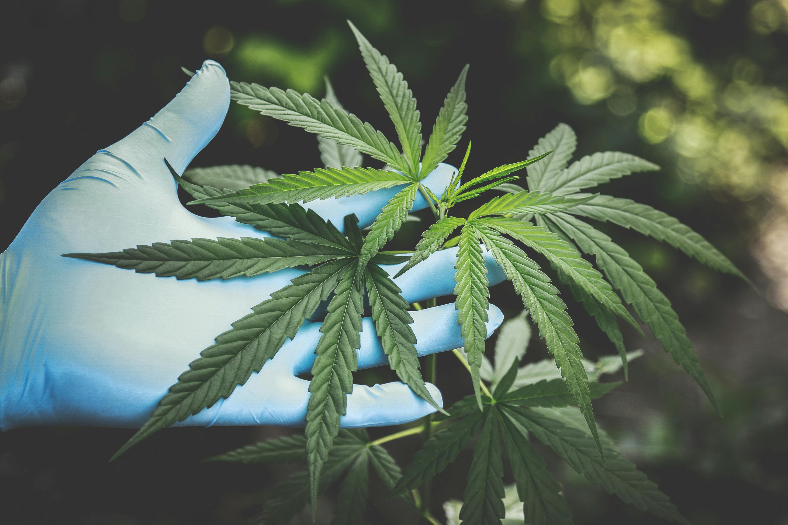

Vaše iskustvo uzgoja CBD
sve na jednom mjestu
Uzgajajte, učite i dijelite s zajednicom. Stručni savjeti, moćni alati i inspirativni ljudi.
Uzgajajte s najboljim CBD dnevnikom
Jednostavno kreirajte biljke i okoliše, pratite putovanje uzgoja i dobivajte podršku od sjemena do žetve.
Krenite od početka
balpha.shop je desna ruka novih i iskusnih uzgajivača.
Biljke i okoliši na jednom mjestu
Sve informacije o uzgoju na jednom mjestu.
Rezultati koje možete mjeriti
Vidite kako ste prošli i učite iz rezultata.
Zajednica uzgajivača
Učite od drugih uzgajivača diljem regije.
Zamijenite nagađanje pouzdanošću
Vodiči za uzgoj CBD-a pružaju stručno znanje o uzgoju. Idealan za početnike.

Vaš partner u uzgoju
Najučinkovitija metoda praćenja rasta i zdravlja biljke. S dnevnicima, podsjetnicima, gnojidbom i više – uspjeh od sjemena do žetve. Intuitivan dnevnik uzgoja CBD biljaka koji vam olakšava cijeli proces i vodi vas kroz žetvu. Idealno za početnike i iskusne uzgajivače. Zamijenite papirnati dnevnik; fokusirajte se na biljke dok balpha.shop prati vaš napredak.
Koristite balpha.shop da biste:
- Kreirali koliko god želite CBD biljaka i okoliša – u zatvorenom ili na otvorenom.
- Pratili sve što radite s biljkama – podsjetnici za zalijevanje i gnojidbu.
- Postavili obavijesti i pametno planirali uzgoj.
- Sigurno držali fotografije biljaka i bilješke u svom uređaju.
- Kreirali grafove, pratili mjerenja i koristili kalkulatore za precizne rezultate.
Vodiči za uzgoj CBD-a
Kratki vodiči za početnike i napredne.
- Što mi treba za početak uzgoja CBD? – Checklist za početnike.
- Klijanje sjemena – Korak po korak za početnike.
- Životni ciklus biljke – Faze tjedan po tjedan.
- Hraniva za CBD biljke – Vodič za gnojidbu.
- Štetočine i prevencija – Kako zaštititi biljke.

Krenite besplatno
Bez registracije. Podaci ostaju na vašem uređaju.